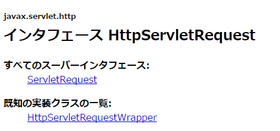
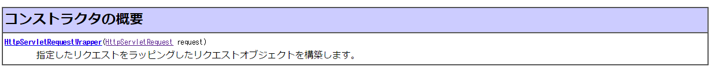
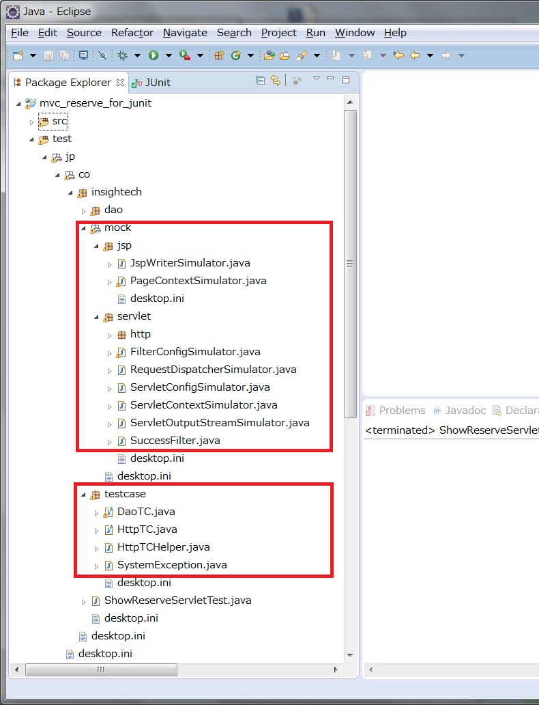

サーブレットメソッドのJUnitテスト
サーブレットメソッドの JUnit テスト
これからサーブレットメソッドのテストを JUnit で実装しますが、この段階で、以下のような疑問がわきます。
- Tomcat を動かさずに、サーブレットのメソッドが実行できるのか
- DAO やユーティリティの実装に依存しないメソッドの呼び出し確認はどのように実行するのか
サーブレットメソッドの実行
まずは、サーブレットのメソッドを呼び出す方法を考えて見ます。
DAO メソッドのテストの際に、以下のようなコードを記述しました。
ReserveDao dao = new ReserveDaoCloseCountMock();
・・・
Vector roomList = dao.getRoomList();
サーブレットのテストクラスも同じような感じで実装すればよいのでしょうか。
ShowReserveServlet servlet = new ShowReserveServlet();
servlet.doPost(request, response);
どうやら、new で ShowReserveServlet クラスのインスタンスを作成したとしても HttpServletRequest オブジェクトや、
HttpServletResponse オブジェクトがないとテスト出来そうにありません。
ところが、HttpServletRequest はインタフェースでした。

JavaDoc で HttpServletRequest を implements した実装クラスを探してみると、HttpServletRequestWrapper クラスというものが見つかりましたが、
HttpServletRequest req = new HttpServletRequestWrapper();
とした時点で、コンパイルエラーでおこられました。
HttpServletRequestWrapper には空のコンストラクタはなく、コンストラクタの引数に HttpServletRequest が必要なようです。

このように、インスタンスのを生成が容易でない場合に、まず思いつくのはリクエストオブジェクトをモックにするという考えです。
しかし、サーブレットメソッドで、入力や出力の要となるリクエストオブジェクトですので、作成に多少時間がかかりそうです。
そこで、今回は、既に作成済みのサーブレット用モッククラス群を使用してテストを実施することにします。
サーブレットモックの導入
次のフォルダの中にある「jp」 フォルダをそのまま 「test」 フォルダの中にコピーしてください。
HttpTC
コピーした中には以下のようなクラス群が含まれています。

導入はこれでおしまいです。
モックの利用方法
これらのモッククラスを利用するためには、以下の設定が必要になります。
- 自分のサーブレットテストクラスに、HttpTC クラスを継承させる。
- setUp の処理を実装する。
サンプルを示します。
package jp.co.insightech;
import static org.junit.Assert.assertEquals;
import org.junit.After;
import org.junit.Before;
import org.junit.Test;
import jp.co.insightech.testcase.HttpTC;
import jp.co.insightech.testcase.HttpTCHelper;
/**
* MVC施設予約サーブレットのテストクラス.
*
* @see ShowReserveServlet
*/
public class ShowReserveServletTest extends HttpTC {
private ShowReserveServlet servlet;
/**
* コンストラクタ
*/
public ShowReserveServletTest() {
}
/**
* セットアップ.
*/
@Before
public void setUp() throws Exception {
servlet = new ShowReserveServlet();
servlet.init(HttpTCHelper.config);
super.setUp();
}
/**
* <pre>
* 【概要】
* ・正しいIDを送信すると、ログインが実施されること.
*
* 【条件】
* リクエストパラメータ
* ・id : 1111
*
* セッション情報
* ・loginUser : null
*
* 【実行】
* ・doGet
*
* 【結果】
* セッション情報
* ・loginUser : User=[id=1111, name="印差 糸子"]
*
* </pre>
*/
@Test
public void testSample() throws Exception {
// 条件
request.addParameter("loginId", "1111");
request.addParameter("login", "ログイン");
// 実行
servlet.doGet(request, response);
// 結果
User user = (User) session.getAttribute("LOGIN_USER");
assertEquals("1111", user.getId());
assertEquals("印差 糸子", user.getName());
}
}
上記のコード中の @Before アノテーションを付けたメソッドは、各テストメソッドの実行前に毎回呼ばれます。
JUnit3 では、このメソッドは、setUp() という決められたひとつのメソッドのみだったのですが、
JUnit4 からは、@Before アノテーションさえつければ、何個でもどんなメソッド名でもつけることができるようになりました。
似たような役割のメソッドに次のようなものがあります。
| JUnit4 のアノテーション |
JUnit3 でのメソッド |
説明 |
| @Before | setUp | 各テストメソッドの実行前に毎回呼ばれます。 |
| @After | tearDown | 各テストメソッドの実行後に毎回呼ばれます。 |
| @BeforeClass | - | 全てのテストメソッドの実行前に１回呼ばれます。 |
| @AfterClass | - | 全てのテストメソッドの実行後に１回呼ばれます。 |
さて、上記のコードの説明に戻ります。セットアップメソッドの中で他の処理を行ってもかまいませんが、
必ず、親クラスのセットアップを呼び出すようにしてください。
設定が終わると、HttpTC クラスがフィールドに既に持っている
「request」、「response」 モックオブジェクトをそのまま使用できるようになります。
これらのモックを利用した具体的なテストコードとして、
リクエストパラメータで、「loginId=1111」「login=ログイン」 が「method=Get」で送信され、サーブレットのdoGet() が実行された場合に、
結果として、セッション内にユーザオブジェクトが格納されることをテストしています。
HttpTC クラスを利用することで、リクエスト情報やセッション情報に対して、直感的なテストが実施できるようになります。
実装に依存しないメソッドの呼び出し確認
さて、次に、ユーティリティメソッドや、DAOメソッドの呼び出し方法について考えます。
サーブレットが、これらのメソッドを直接呼び出さずに
- メソッドに正しい引数を渡されること
- メソッドの戻り値を正しく処理していること
を確認するためには、DBUnit のテストで実施したような、クローズ回数をカウントするようなモックを作成すればいいという考えが浮かびます。
getReserveList() メソッドをオーバーライドした DAO のモックを以下のように作成します。
/**
* ReserveDao のモッククラス
*/
class ReserveDaoMock extends ReserveDao {
private Calendar argCal;
private int callCount;
@Override
public Vector getReserveList(Calendar cal) throws Exception {
// 引数を保存
argCal = cal;
// 呼び出し回数をインクリメント
callCount++;
// 戻り値は固定
Vector result = new Vector();
return result;
}
}
戻り値は固定で、引数や呼び出し回数を後から取得できるようなつくりになっています。
サーブレットコード内で呼び出している DAO と差し替えます。
サーブレットメソッド内では以下のような修正が必要になるでしょう。
もともと、new していた DAO を、
ReserveDao dao = new ReserveDao();
getReserveDao() というメソッドで取得するように変更。
ReserveDao dao = this.getReserveDao();
この getReserveDao() メソッドをサーブレットテスト内のサーブレットのモッククラスでオーバーライドして、
DAO のモッククラスを返却するようにする、という手順になるでしょう。
次にユーティリティクラスのメソッド呼び出しですが、以下のような static メソッドの呼び出しはそもそもオーバーライドできません。
String userId = request.getParameter("userId");
if (ReserveUtil.isEmpty(userId)) {
// ... エラー処理
} else {
// ... 正常処理
}
対応としてひとつ考えられるのは、同じシグネチャをもつメソッドを、サーブレット内に定義するという方法です。
直接ユーティリティメソッドを呼び出していた部分は、そのメソッドの呼び出しに変更します。
そして、そのメソッドをサーブレットテスト内のサーブレットモックでオーバーライドして、引数、戻り値を変更します。
String userId = request.getParameter("userId");
if (this.isEmpty(userId)) {
// ... エラー処理
} else {
// ... 正常処理
}
/**
* 指定された文字列が空かどうかを判断します。
* @param value 指定された文字列
* @return 空の場合 true それ以外の場合 false
*/
protected boolean isEmpty(String value) {
return ReserveUtil.isEmpty(value);
}
/**
* ReserveServlet のモッククラス
*/
class ReserveServletMock extends ReserveServlet {
private String argValue;
@Override
protected boolean isEmpty(String value) {
// 引数を保存
argValue = value;
// 戻り値は固定
return false;
}
}
このように、サーブレットを修正、モッククラスを作成すれば、実際のクラスに依存しないテストが実施できます。
しかし、サーブレットメソッド内では、たくさんのメソッドの引数や戻り値を使用しています。
JUnit でこれらを全て検証するためには、
ユーティリティクラスへの委譲メソッドや、専用のモッククラスをたくさん追加する必要がありそうです。
前回の終わりで見た JavaDoc のテスト仕様を思うと、他の方法も検討してみたほうがよさそうです。
そこで、今回は VMO （Virtual Mock Objects : バーチャルモックオブジェクト） という、djUnit の機能を利用して、
現在のコードを修正することなく、そしてモックを作成することもなく、同じようなテストができる方法を採用することにします。
©日本インサイトテクノロジー株式会社
かつ実際あまり使用されることはないため、今回は使用しません。